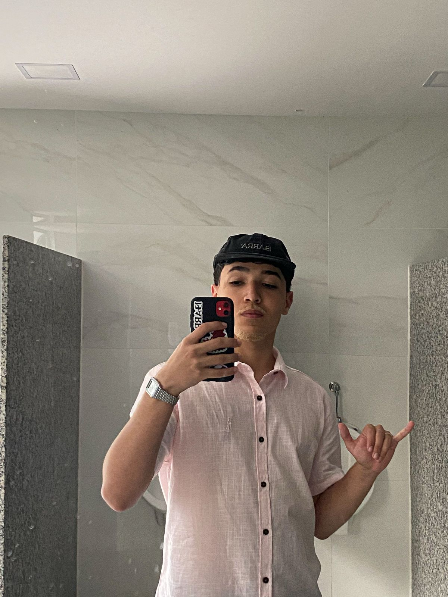

Bem-vindo à minha página!
Me chamo Emanuel, sou estudante de Ciência da Computação pela UVV. Sempre me interessei pela área tecnologica e esse foi um dos motivos que me fez escolher ciência da computação.
Objetivos Profissionais
Desejo continuar trabalhando com meu ecommerce e creio que a programação vai acrescentar bastante futuramente na minha vida profissional.
Habilidades
- HTML, CSS
- Banco de dados (MySQL)
- Boa comunicação
Vida Pessoal
- Torço pro Flamengo
- Namoro a 3 anos
- Gosto de surfar
- Participo do departamento dos Desbravadores pela IASD
Vida Acadêmica
Ensino Fundamental feito na escola CEVIM e Ensino Médio no colégio LUSIADAS. Cursando Ciência da Computação na Universidade Vila Velha. Desejo um futuro prospero e que eu consiga trabalhar com o que eu gosto.
Eventos e Trabalhos Acadêmicos
- Afiliados Brasil - 2024-SP
- Convenção Digital - 2024-SP
Matérias Atuais
- Construção de Software para Web (Ensina os fundamentos do desenvolvimento de aplicações web, desde a estrutura básica de páginas até sistemas interativos e dinâmicos).
- Design e Desenvolvimento de Banco de Dados I (Aborda os conceitos básicos para modelar, criar e gerenciar bancos de dados, focando na organização e manipulação eficiente e segura das informações).
- Experiência e Interface com o Usuário (Foca no design de sistemas intuitivos, acessíveis e fáceis de usar, priorizando a usabilidade e a experiência do usuário.)
- Fundamentos de Tecnologia da Computação (Ensina os conceitos básicos de hardware, software, redes e lógica, formando a base para compreender as tecnologias da informática).
- Lógica para Computação(Aborda a lógica matemática aplicada ao desenvolvimento de algoritmos e programação, incluindo proposições, conectivos, tabelas-verdade e raciocínio lógico).
- Textos Científicos: Aspectos Metodológicos e Linguísticos(ensina a redação e estruturação de textos acadêmicos, focando na metodologia científica e linguagem objetiva).
Planos Futuros
Desejo continuar trabalhando no digital, participar de projetos em que eu possa mostrar meu trabalho para outras pessoas, ser reconhecido e fazer a diferença na vida das pessoas.